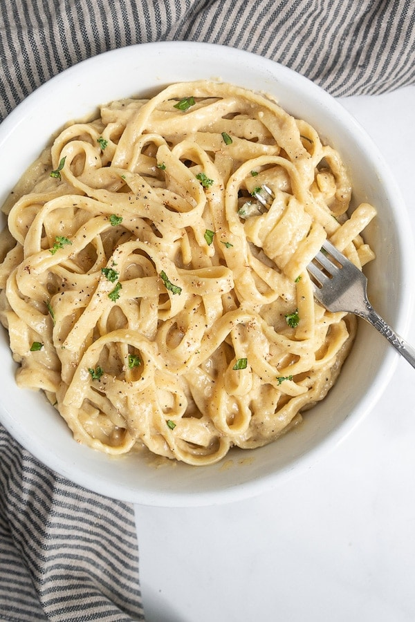

Plant-Based Fettuccine Alfredo

Ingredients:
- 1 lb (450g) fettuccine pasta
- 1 cup (240ml) raw cashews
- 1 1/2 cups (360ml) water
- 1/4 cup (60ml) nutritional yeast
- 3 cloves garlic, minced
- 1/2 tsp salt
- 1/2 tsp black pepper
- 2 tbsp (30ml) olive oil
- 1 tbsp (15ml) lemon juice
- Fresh parsley or basil, chopped (optional)
Instructions:
- Start by soaking the cashews in hot water for at least 30 minutes. If you have a high-speed blender, you can skip this step.
- Cook the fettuccine according to package instructions.
- In a blender, combine the soaked cashews, water, nutritional yeast, garlic, salt, black pepper, olive oil, and lemon juice. Blend until the mixture is smooth and creamy.
- In a saucepan over low heat, pour the blended mixture and heat until the sauce thickens, stirring occasionally for about 5-7 minutes.
- Once the sauce has thickened, pour it over the cooked fettuccine, and mix well.
- Serve the pasta hot, garnished with chopped parsley or basil, if desired.
Enjoy your delicious Whole Food Plant-Based Fettuccine Alfredo!
Back to Home